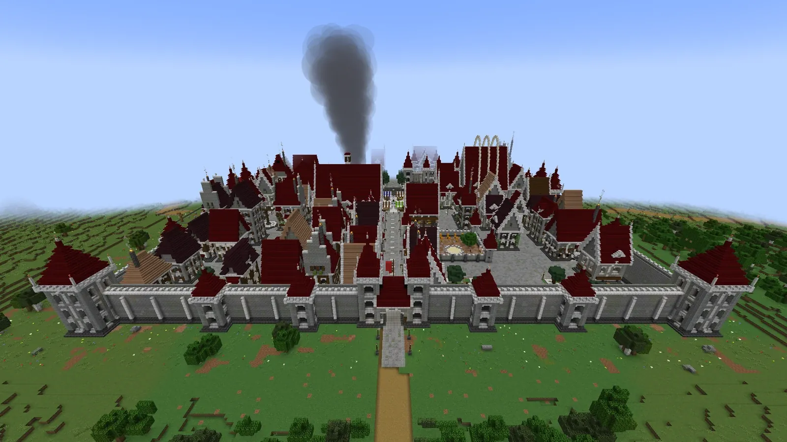
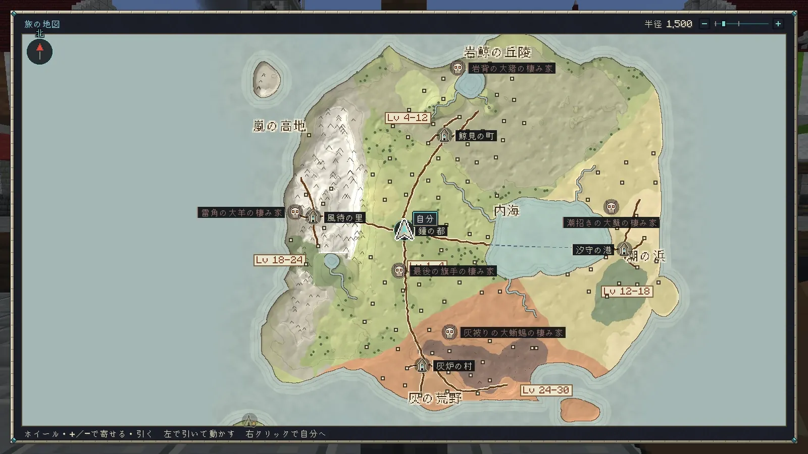
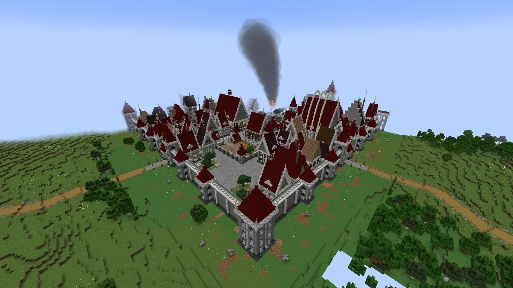
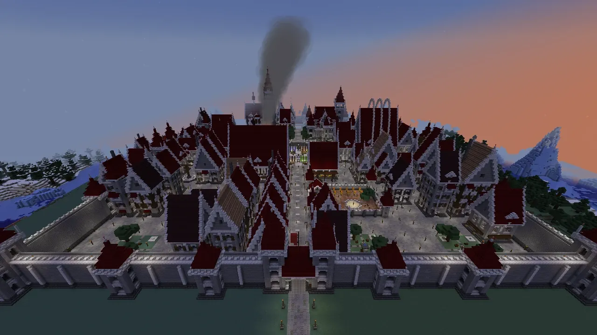
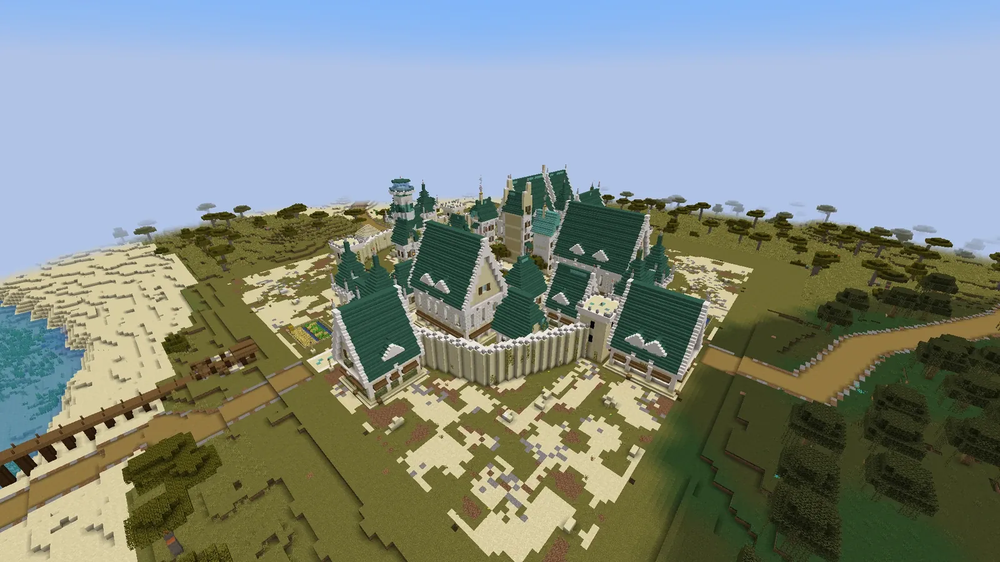
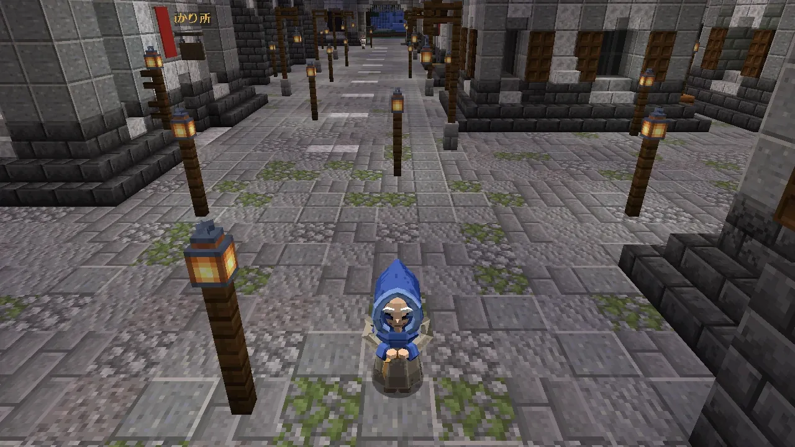

岩鯨
- 居場所
- 空（岩鯨の丘陵の上）
- 推奨 Lv
- 12
- 中ボス
- 番兵長
空を泳ぐ石の鯨。背中に、滅んだ古い町を乗せています。

天と淵のあいだ
空を泳ぐ巨神、地の底の心臓、近づいてくる月。手で描いた一枚の大陸を舞台にした物語です。
THE CONTINENT
真ん中に鐘の都、そのまわりに四つの土地。土地ごとに町があり、巨神が決まった居場所で休んでいます。

世界は一枚の大陸で、地形も町も道も手で描いたものです。都から土の道が各町の門まで続き、道の途中には道しるべと見どころがあります。
| 土地 | 町 | 敵の目安 Lv | 巨神 | 地下のダンジョン |
|---|---|---|---|---|
| 岩鯨の丘陵 | 鯨見 | 4〜12 | 岩鯨（空） | 鯨骨の坑 |
| 潮の浜 | 汐守 | 12〜18 | 潮殻（海） | 潮の洞 |
| 嵐の高地 | 風待 | 18〜24 | 雷翼（峰） | 雷晶の空洞 |
| 灰の荒野 | 灰炉 | 24〜30 | 余燼（地の中） | 熔けた坑道 |
BELL CAPITAL
空を見張ってきた小さな国の都の跡。大きいのに人が少ない、静かな都です。

序章で必ず着く都です。大鐘楼の足もとに、最後の鐘守の語り部がいます。宿・店・預かり所・鍛冶場・訓練場・組合・取引所など、旅の支度はここでそろいます。



FOUR TITANS
心臓を止めても巨神は死にません。深い眠りに落ち、鼓動が戻ると、また背に挑めます。
空を泳ぐ石の鯨。背中に、滅んだ古い町を乗せています。

海をゆく甲羅の巨神。甲羅の上に塔が立ちます。

嵐を連れた大鷲。峰に降りて翼をたたみます。

地の中を泳ぎ、夜に浮かぶ火山の蜥蜴です。
STORY
主人公は「留まる者」。月が落ちて時が巻き戻っても、記憶を保てるただ一人です。
はじまりの島の野営地で目を覚まします。島の頼みをこなして職を選び、渡し守の舟で鐘の都へ。都では語り部が、空を横切る影の話をします。
鯨見の町から支度をして、空を泳ぐ岩鯨の垂れた鎖をのぼり、背へ。背の順路を抜け、体の奥で脈打つ心臓を止めると、天の鍵の欠片が手に入ります。
汐守の町から舟で沖へ。潮殻の甲羅の門から背へ上がり、二つ目の心臓に挑みます。
風待の町から嵐の高地へ。峰に降りた雷翼の背で、雷の獣と三つ目の心臓が待っています。
灰炉の町から灰の荒野へ。地の中を泳ぐ余燼が眠ると、口から背へ入れます。熾の底の心臓が最後の欠片を守っています。

四つの欠片がそろうと、天の鍵が足もとを指します。都の下の大坑道から、骨・塩・雷・灰の四つの層を下り、世界の底の心臓へ。

毎夜少しずつ近づいてくる月へ、都の大鐘楼の上の門から渡ります。四つの区画の主を越え、時を縛る月の核へ。

月の核を止めたあと、雲の上の海へ。雲の島々を渡り、雲上の巡礼者と向き合います。結末は三つです。
世界は、空の巡礼者と地の底の心臓が引き合うことで保たれています。心臓が弱り、巡礼者が降りてくる。その兆しが、近づいてくる月です。
| 存在 | 正体 |
|---|---|
| 雲上の巡礼者 | 空を統べる古き神。月を引きずって空を飛ぶ。全身は最後まで見えない |
| 止まった月 | 巡礼者が降りてくる兆し。中に時間を縛る核がある |
| 深淵の心臓 | 世界を地上につなぎとめる錨。弱っている |
| 巨神（4 体） | 心臓が生んだ守護者。心臓から分かれた鼓動を体の奥に抱える |
| 見る者 | 夜、遠くの丘に立つ自分に似た人影。前のループの自分が残した影 |
結末は、鎮める（心臓を癒し均衡を戻す）・壊す（心臓を壊し巡礼者を封じる）・受け入れる（巡礼者を地上に招く。隠し）の三つです。
PEOPLE
